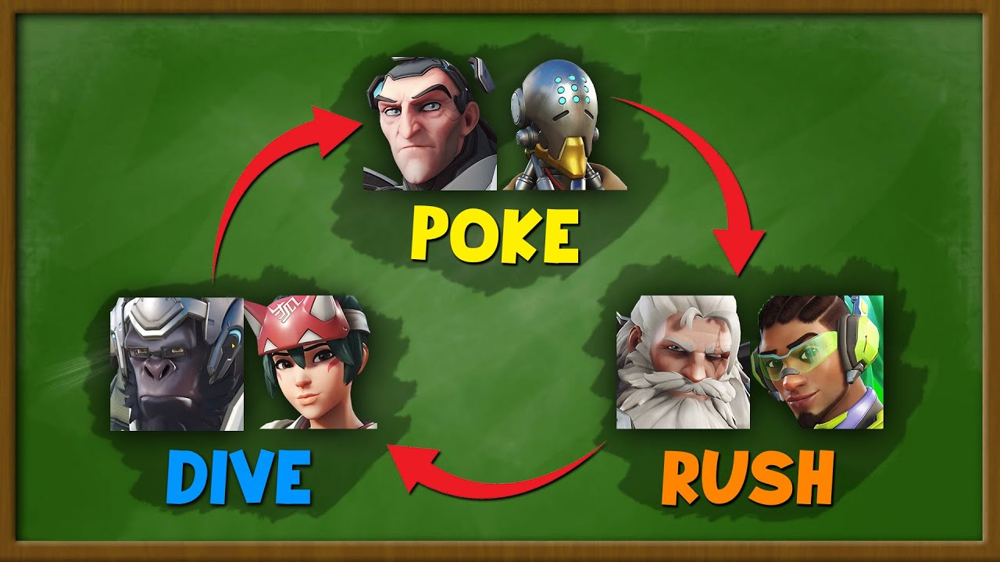

What is a team composition and why is it important?
In Overwatch 2, team compositions are the heroes that make up your team and their individual roles. In the role queue game mode, there are three primary roles. These three roles are Tank, Damage, and Support. Each role has it's own style of gameplay and niche. For more details on hero roles, visit Hero types in Overwatch 2. On this page, we will go into detail about different team compositions and their strengths and weaknesses.
Different types of team Compositions
In Overwatch 2, there are three main types of team composition, these being Poke, Dive, and Rush. Poke is stylized by longer range gameplay, with shields and hitscan damage heroes. Poke tends to play grouped up and takes longer range engagements. Dive is stylized by high mobility, with different groups of heroes converging on targets together. Rush is also stylized by high mobility, but the team tends to move as one group as opposed to segmented groups.
